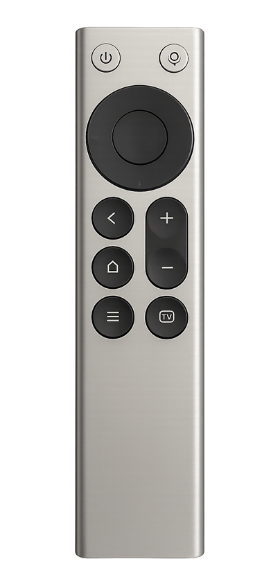

遥控器
MI RC
已连接
89% 电量
修改后自动保存
按键图
13 键
已选：确定圆点是可点击按键
当前按键
已设置确定
3 个手势
单击
确定
双击
播放 / 暂停
长按
未设置
试执行
试执行只验证动作，不向电脑注入按键。
语音链路
正常音频端点CABLE Output
按住语音键右 Alt
全按键支持
关
VB-CABLE
渲染端点选 CABLE Input，麦克风选 CABLE Output。全按键支持可能需要管理员 Helper。
全部映射
全部已设置未设置
按键单击双击长按接收
电源长按关机禁用禁用—
上方向上禁用禁用—
左方向左禁用禁用—
确定确定播放 / 暂停未设置—
滚动查看全部 13 个按键点击单元格直接修改